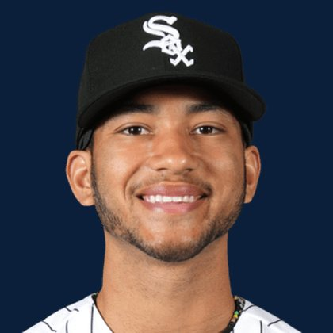

BASEBALLKEEP
Dynasty · Redraft · Diamond
Player File · OF CWS

Braden Montgomery
#24 · OF · Chicago White Sox · age 23 · B/T SR · 6' 2" / 220 lbs · MLB debut 2026 · Des Moines, USA
Hitting
| Year | G | AB | R | H | 2B | HR | RBI | SB | BB | SO | AVG | OBP | SLG | OPS |
|---|---|---|---|---|---|---|---|---|---|---|---|---|---|---|
| 2026 | 59 | 214 | 30 | 51 | 11 | 4 | 30 | 1 | 26 | 54 | .238 | .328 | .374 | .702 |
Plus
- Age 23 — still climbing the curve.
- On 8 boards — not a one-list darling.
Minus
- Board spread is 175 ranks. You are betting with one camp, not a unanimous tape.
BaseBallKeep Take
Braden Montgomery is #190 on BaseBallKeep's overall dynasty 300, a 23-source mix anchored by RotoGraphs (Aug 14) and The Dynasty Guru points list (Aug 10). OF for CWS. Lineup #128. Rest-of-season redraft #190. MLB since 2026. From Des Moines / USA. Bats S, throws R.
BK Value on this rank is 206. Same decaying curve as football: 12,000 at 1.01, a late first a fraction of that. If someone is asking for two firsts, run the calculator. 2026 line: .238 / 4 HR / 1 SB / .702 OPS in 59 games.
The 23-board average is 189.12 on 8 lists that actually ranked him — unranked sources are skipped, never treated as 999. High 108, low 283.
Dynasty pays the next five years. Redraft pays September. If those two ranks diverge, that is the instruction: hold the kid or cash the veteran.
Flags fly forever. We will refresh this file with The Keep. September baseball is a proving ground, not a coronation.
Every Board
Spread 108–283 · 8 sources
| Source | Rank |
|---|---|
| TDG Points | 108 |
| Razzball | 175 |
| FanGraphs The Board | 176 |
| FantasyPros Dynasty ECR | 190 |
| NFBC ADP | 193 |
| ATC ROS | 193 |
| The Dynasty Dugout | 195 |
| RotoGraphs Model | 283 |
On The Keep nearby — MacKenzie Gore (#188) · Casey Mize (#189) · Shota Imanaga (#191) · Mickey Moniak (#192)
Same position on the 300 — Juan Soto #3 · Aaron Judge #6 · James Wood #8 · Pete Crow-Armstrong #11 · Corbin Carroll #15 · Julio Rodríguez #19
All players · The Keep · The Lineup · Pitchers · Calculator